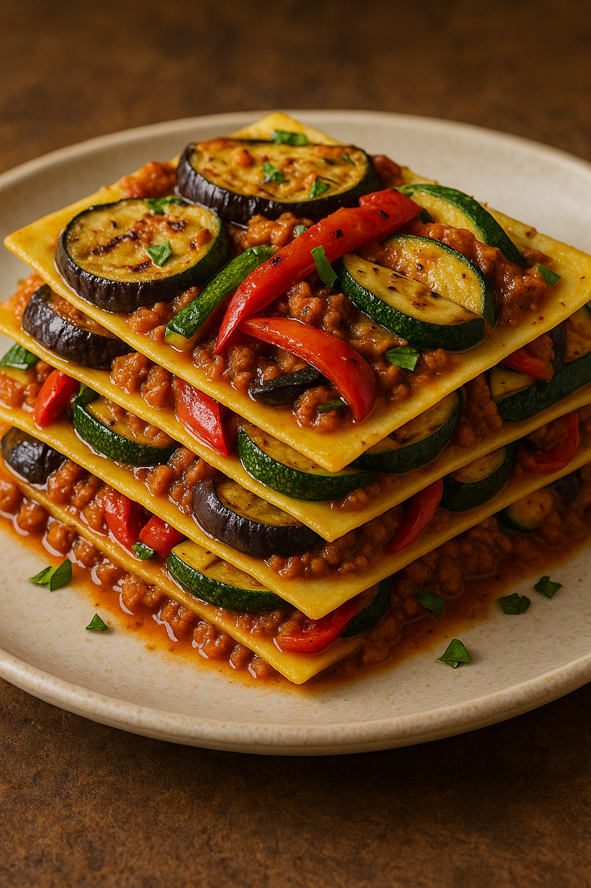
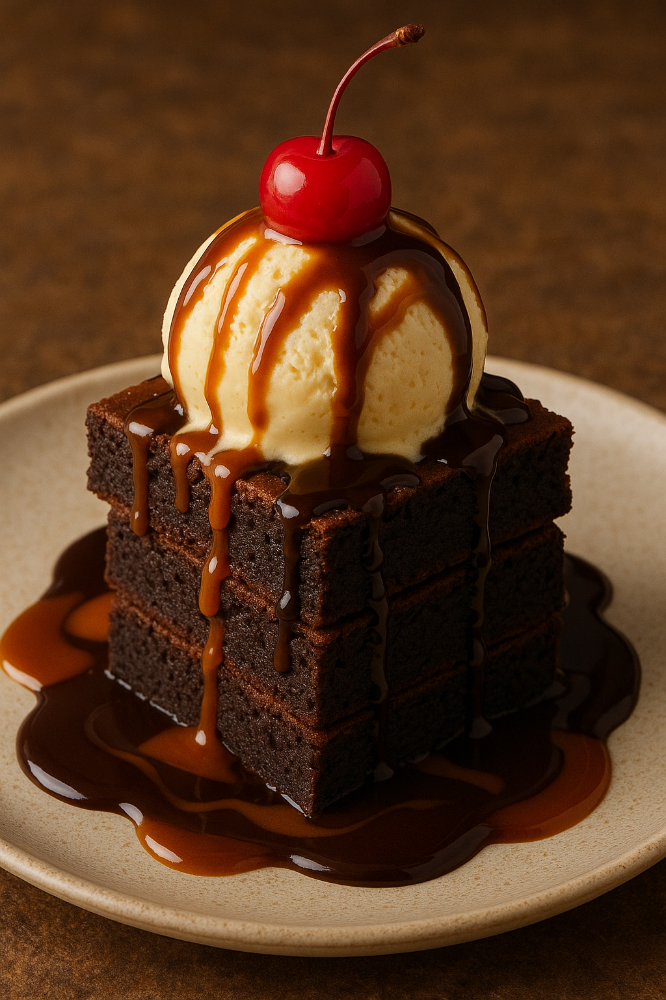

Pâte Feuilletée avec les crevetters – Les crevettes coupées finement avec l'ail et les échalotes sautee dans un peu d'huile d'olive accompagner avec le fromage ricotta, et jus de citron$14.96
Pâte Feuilletée avec les champignons – Pleurotes finement hachés à l'ail sautee dans un peu d'huile d'olive accompagnés avec le fromage râpé, un peu de persil et crème légère$12.96
Plats Principaux

Lasagne à la sicilienne (Végétarienne) – Une lasagne préparée avec des couches de pâtes fraîches, d'aubergines, d'olives vertes, de poivrons et de courgettes, le tout grillé dans de l'huile d'olive et un pesto de tomates rouges à l'italienne, avec du soja haché. $27.68
Lasagne à la sicilienne (Non Végétarienne) – Une lasagne préparée avec des couches de pâtes fraîches, d'aubergines, d'olives vertes, de poivrons et de courgettes, le tout grillé dans de l'huile d'olive et un pesto de tomates rouges à l'italienne, avec du poulet ou du bœuf haché. $33.39
Desserts

Tour de brownies – Tour de 3 brownies avec glace vanille glacée d'une cerise et sauce caramel et chocolat$11